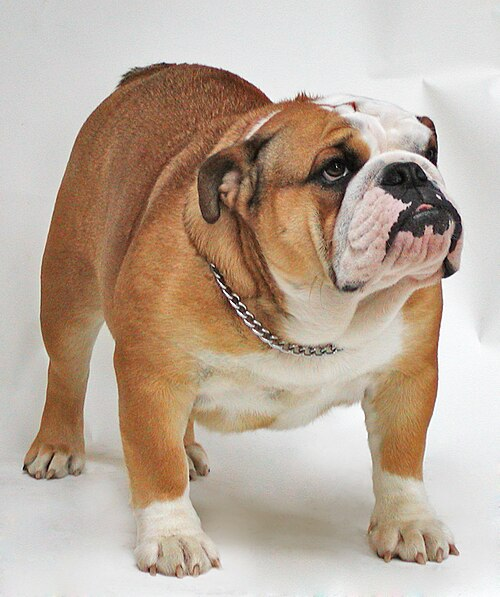

Bulldog
როდესაც 1830 წელს, აკრძალეს ძაღლების ბრძოლები ხარებთან, ეს ჯიში გადაშენების საფრთხის წინ აღმოჩნდა. თუმცა ბილ ჯორჯმა შეცვალა ჯიში, დააჯილდოვა რა იგი თანამედროვე ექსტერიერით და აგრესიულობის შემცირებით. ბულდოგებმა წინაპრებთან შედარებით მკვეთრად შეიცვალეს თავისი ფუნქცია, ხასიათი და გარეგნული სახე. სიტყვა „ბულდოგს“ XVII საუკუნეში იყენებდნენ იმ ძაღლების აღსანიშნავად, რომლებიც მიიღეს მასტიფების (რომლებიც დათვზე ნადირობდნენ) და ტერიერების შეჯვარებით. ძლიერი და გამბედავი ბულდოგები იდეალურ ძაღლად ითვლებოდა ნადირობისას, ისინი უშიშრად ეცემოდნენ ხარს და ყურადღებას არ აქცევდნენ მიყენებულ ჭრილობებს.
